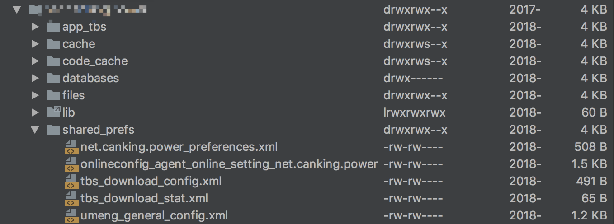

在技术学习的道路上，往往最常见、用的最多地方，却有着容易忽略的技术细节。某个时间点蓦然回首，才发现最应该了解和掌握的技术基础，却由于缺少总结和记录、或者是因为常态思维固化缺少场景去思考，却显得那么陌生。
这篇文章将从作者自身的角度，去重新认识SharedPreference和ContentProvider这两个控件，并且以后也会在博客中有意识的记录类似的技术细节，防止这些基础的技术细节问题再次被遗忘和忽略。
SharedPreference和ContentProvider 细节知识加固
开始前，先来自述下作者对安卓系统这两个控件以往一般的认识。
SharedPreference
- Android平台轻量级数据存储方式，底层系统封装了xml文件存储，基于key-value键值对数据。
- SharedPreference提供了多种读取模式，可支持多进程读取，但是并不保证多进程并发读写安全。
- 底层xml文件的初始化加载和Edit的apply方法是在子线程中进行。
ContentProvider
- Android平台四大组件之一，数据共享控件，多用于多个进程间的数据传递。
- 启动要优先于Application的OnCreat方法（查看Application初始化源码得之），尽量不要在App初次启动，（启动进程中）使用多个ContentProvider。
- ContentProvider进程间IPC调用，用到了Binder获取文件描述符（FileDescriptor），通过文件描述符实现了高效的共享内存，使得进程间可传递大量数据（Binder接口有1M大小限制）。
一、SharedPreference 知识加固
SharedPreference文件保存在App私有目录中，可以在root手机或者调试模式run-as进入查看。

1、SharedPreference在多进程并发读取时，数据是不安全，那单进程多个线程并发情况呢？
平时遇到SharedPreference的数据读取问题，几乎都是多进程并发场景。多进程问题项目中，基本都是封装一层ContentProvider，将数据的读写共享到其他进程，来保证数据的正确性（当然也可以自定义SharedPref的实现类，去保证多进程并发逻辑）。
那单进程情况下SharedPref多线程的并发，却是容易忽略的地方（虽然很久之前，看过SharedPref的部分源码，但是还是忘了系统是有针对并发加锁的）。
其实简单分析下，平时没有遇到单线程的并发问题，也没有针对单线程的SharedPref读写做相关锁操作，理论上应该是线程安全的，那么我们深入源码看看系统到底是如何保证并发安全的～
从ContextImpl开始去获取一个SharedPref实例：
1 2 3 4 5 6 7 8 9 10 11 12 13 14 15 16 17 18 19 20 21 22 23
| @Override public SharedPreferences getSharedPreferences(File file, int mode) { checkMode(mode); SharedPreferencesImpl sp; synchronized (ContextImpl.class) { final ArrayMap<File, SharedPreferencesImpl> cache = getSharedPreferencesCacheLocked(); sp = cache.get(file); if (sp == null) { sp = new SharedPreferencesImpl(file, mode); cache.put(file, sp); return sp; } } if ((mode & Context.MODE_MULTI_PROCESS) != 0 || getApplicationInfo().targetSdkVersion < android.os.Build.VERSION_CODES.HONEYCOMB) { sp.startReloadIfChangedUnexpectedly(); } return sp; }
|
系统中默认的SharedPref实现类是SharedPreferenceImpl，找到这个类相关读写方法，会看到系统已经针对并发加类锁机制。
1 2 3 4 5 6 7 8 9 10 11 12 13 14
| public Editor putLong(String key, long value) { synchronized (this) { mModified.put(key, value); return this; } } public long getLong(String key, long defValue) { synchronized (this) { awaitLoadedLocked(); Long v = (Long)mMap.get(key); return v != null ? v : defValue; } }
|
由此可见，虽然系统默认实现的SharedPreferencesImpl支持的多进程的去写模式，但并不保证数据安全。方法读取时，系统已经帮我们针对并发加类锁机制。
2、Xml文件的初始化加载和Edit的apply方法是在子线程中进行，那么是否意味着，我们可以不用考虑卡UI，去放心的加载大Shared文件和apply的频繁调用？
A、先来分析Xml的加载问题
还是从源码开始，上文中SharedPreferencesImpl的获取是从下面这段代码开始的：
1 2 3 4 5 6 7 8 9 10 11 12 13 14 15 16 17 18 19 20 21 22 23 24 25
| private static ArrayMap<String, ArrayMap<File, SharedPreferencesImpl>> sSharedPrefsCache; synchronized (ContextImpl.class) { final ArrayMap<File, SharedPreferencesImpl> cache = getSharedPreferencesCacheLocked(); sp = cache.get(file); if (sp == null) { sp = new SharedPreferencesImpl(file, mode); cache.put(file, sp); return sp; } } private ArrayMap<File, SharedPreferencesImpl> getSharedPreferencesCacheLocked() { if (sSharedPrefsCache == null) { sSharedPrefsCache = new ArrayMap<>(); } final String packageName = getPackageName(); ArrayMap<File, SharedPreferencesImpl> packagePrefs = sSharedPrefsCache.get(packageName); if (packagePrefs == null) { packagePrefs = new ArrayMap<>(); sSharedPrefsCache.put(packageName, packagePrefs); } return packagePrefs; }
|
这里看到，系统为了快速读取已经加载到内存的SharedPref文件，会将读进来的文件保存在一个静态的Map中。这样空间换时间，虽然读取速度有了一定优化，但是读到内存的对象，不会被释放。
SharedPreferencesImpl构造器中会开始加载目标file,如下：
1 2 3 4 5 6 7 8 9 10
| private void startLoadFromDisk() { synchronized (this) { mLoaded = false; } new Thread("SharedPreferencesImpl-load") { public void run() { loadFromDisk(); } }.start(); }
|
这里主要看mloaded标记，用来标记文件是否已经加载完成，主要用在awaitLoadedLocked()方法中。
1 2 3 4 5 6 7 8 9 10
| private void awaitLoadedLocked() { ～～～ ··· while (!mLoaded) { try { wait(); } catch (InterruptedException unused) { } } }
|
而awaitLoadedLocked()方法会在每次读和保存时调用，以为着在加载过程中，如果主线程有读写操作，依然会卡UI。
So，Xml的加载本身虽然不卡UI，但是读取操作会等待加载过程，依然有可能卡UI的。并且SharedPref尽量分类去保存，避免一次加载很大的无用文件到内存（可能引起GC，依然会卡UI），耗时又耗内存。
B、Apply方法是否会引起卡顿？
Show me the code
1 2 3 4 5 6 7 8 9 10 11 12 13 14 15 16 17 18 19 20 21 22 23 24 25 26 27 28 29 30 31 32 33 34 35 36 37 38 39 40 41 42 43 44 45 46 47 48 49 50 51 52 53 54 55 56 57 58 59 60 61 62
| public void apply() { final MemoryCommitResult mcr = commitToMemory(); final Runnable awaitCommit = new Runnable() { public void run() { try { mcr.writtenToDiskLatch.await(); } catch (InterruptedException ignored) { } } }; QueuedWork.add(awaitCommit); Runnable postWriteRunnable = new Runnable() { public void run() { awaitCommit.run(); QueuedWork.remove(awaitCommit); } }; SharedPreferencesImpl.this.enqueueDiskWrite(mcr, postWriteRunnable); notifyListeners(mcr); } private void enqueueDiskWrite(final MemoryCommitResult mcr, final Runnable postWriteRunnable) { final Runnable writeToDiskRunnable = new Runnable() { public void run() { synchronized (mWritingToDiskLock) { writeToFile(mcr); } synchronized (SharedPreferencesImpl.this) { mDiskWritesInFlight--; } if (postWriteRunnable != null) { postWriteRunnable.run(); } } }; final boolean isFromSyncCommit = (postWriteRunnable == null); if (isFromSyncCommit) { boolean wasEmpty = false; synchronized (SharedPreferencesImpl.this) { wasEmpty = mDiskWritesInFlight == 1; } if (wasEmpty) { writeToDiskRunnable.run(); return; } } QueuedWork.singleThreadExecutor().execute(writeToDiskRunnable); }
|
然后只到发现Activity的一段代码（思路及代码参考见这里）
1 2 3 4 5 6 7 8 9 10 11 12 13 14 15
| private void handleStopActivity(IBinder token, boolean show, int configChanges, int seq) { ....··· if (!r.isPreHoneycomb()) { QueuedWork.waitToFinish(); } ··· } public static void waitToFinish() { Runnable toFinish; while ((toFinish = sPendingWorkFinishers.poll()) != null) { toFinish.run(); } }
|
如果Activity在stop时，apply到QueuedWork中任务未执行完，就会在引起主线的等待造成卡顿。
所以，尽量不要频繁的调用apply，可以将多个提交合成一个apply，并且注意规避activity stop时候的SharedPref保存逻辑，避免卡顿。
二、ContentProvider 知识加固
1、ContentProvider为多进程数据的读取提供类机制，那么单进程下使用ContentProvider,能保证线程并发安全吗？
平时项目中常用到ContentProvider的地方见的最多的可能就是DB的和SharedPreference的数据封装类，由于Sqlite和SharedPref都是自身可以支持线程并发问题的，并没有注意到ContentProvider自身方法的并发特性。
提高ContentProvider，工程中更多的注意力放在类多进程的交互方式上，而忽略了自身方法调用的细节问题。
1
| ContentResolver resolver = content.getContentResolver();
|
通常，在使用ContentProvider时，会通过以上代码去获取ContentResolver引用，然后调用相关接口方法。
1 2 3 4 5 6
| private final ApplicationContentResolver mContentResolver; @Override public ContentResolver getContentResolver() { return mContentResolver; }
|
同样，接口方法依然在ContextImpl中，可以看到ContentResolver的实现类是ApplicationContentResolver。
这里以query方法为例，深入分析下：
1 2 3 4 5 6 7 8 9 10 11 12 13 14 15 16 17 18 19 20 21 22 23 24 25 26 27 28 29 30 31 32 33 34 35 36 37 38 39 40 41 42 43 44 45 46 47
| public final @Nullable Cursor query(final @RequiresPermission.Read @NonNull Uri uri, @Nullable String[] projection, @Nullable String selection, @Nullable String[] selectionArgs, @Nullable String sortOrder, @Nullable CancellationSignal cancellationSignal) { IContentProvider unstableProvider = acquireUnstableProvider(uri); if (unstableProvider == null) { return null; } IContentProvider stableProvider = null; Cursor qCursor = null; try { long startTime = SystemClock.uptimeMillis(); ICancellationSignal remoteCancellationSignal = null; if (cancellationSignal != null) { cancellationSignal.throwIfCanceled(); remoteCancellationSignal = unstableProvider.createCancellationSignal(); cancellationSignal.setRemote(remoteCancellationSignal); } try { qCursor = unstableProvider.query(mPackageName, uri, projection, selection, selectionArgs, sortOrder, remoteCancellationSignal); } catch (DeadObjectException e) { unstableProviderDied(unstableProvider); stableProvider = acquireProvider(uri); if (stableProvider == null) { return null; } qCursor = stableProvider.query(mPackageName, uri, projection, selection, selectionArgs, sortOrder, remoteCancellationSignal); } if (qCursor == null) { return null; } return wrapper; } catch (RemoteException e) { return null; } finally { } }
|
主要跟踪下IContentProvider接口如何在acquireProvider和acquireUnstableProvider中的实现，最终会委托给ActivityThread的acquireProvider方法，如下：
1 2 3 4 5 6 7 8 9 10 11 12 13 14 15 16 17 18 19 20 21 22
| public final IContentProvider acquireProvider( Context c, String auth, int userId, boolean stable) { final IContentProvider provider = acquireExistingProvider(c, auth, userId, stable); if (provider != null) { return provider; } IActivityManager.ContentProviderHolder holder = null; try { holder = ActivityManagerNative.getDefault().getContentProvider( getApplicationThread(), auth, userId, stable); } catch (RemoteException ex) { } if (holder == null) { Slog.e(TAG, "Failed to find provider info for " + auth); return null; } holder = installProvider(c, holder, holder.info, true , holder.noReleaseNeeded, stable); return holder.provider; }
|
方法的最后一个参数stable代表着ContentProvider能否可靠拿到一个进程存活的Provider。首先调用了acquireExistingProvider，去mProviderMap中获取一次接口。
1 2 3 4 5 6 7 8 9 10 11 12 13 14 15 16 17 18 19 20 21 22 23 24 25 26 27 28 29
| public final IContentProvider acquireExistingProvider( Context c, String auth, int userId, boolean stable) { synchronized (mProviderMap) { final ProviderKey key = new ProviderKey(auth, userId); final ProviderClientRecord pr = mProviderMap.get(key); if (pr == null) { return null; } IContentProvider provider = pr.mProvider; IBinder jBinder = provider.asBinder(); if (!jBinder.isBinderAlive()) { Log.i(TAG, "Acquiring provider " + auth + " for user " + userId + ": existing object's process dead"); handleUnstableProviderDiedLocked(jBinder, true); return null; } ProviderRefCount prc = mProviderRefCountMap.get(jBinder); if (prc != null) { incProviderRefLocked(prc, stable); } return provider; } }
|
mProviderMap中，这个map的类型是ArrayMap，那么mProviderMap中的数据是哪里的呢？
查下mProvider的put方法，只有installProviderAuthoritiesLocked中调用，并且它是在又是在installProvider的调用的，那么重的分析下installProvider方法。
installProvider方法主要会在handleBindApplication和acquireProvider方法中调用，意味着：本进程和AMS获取到的Provider都会调用installProvider最后会放到mProviderMap缓存中，
1 2 3 4 5 6 7 8 9 10 11 12 13 14 15 16 17 18 19 20 21 22 23 24 25 26 27 28 29 30 31 32 33 34 35 36 37 38 39 40 41 42 43 44 45 46 47 48 49 50 51 52 53 54 55 56 57 58 59 60 61 62 63 64 65 66 67 68 69 70 71 72 73 74 75 76 77 78 79
| private IActivityManager.ContentProviderHolder installProvider(Context context, IActivityManager.ContentProviderHolder holder, ProviderInfo info, boolean noisy, boolean noReleaseNeeded, boolean stable) { ContentProvider localProvider = null; IContentProvider provider; if (holder == null || holder.provider == null) { try { final java.lang.ClassLoader cl = c.getClassLoader(); localProvider = (ContentProvider)cl. loadClass(info.name).newInstance(); provider = localProvider.getIContentProvider(); if (provider == null) { Slog.e(TAG, "Failed to instantiate class " + info.name + " from sourceDir " + info.applicationInfo.sourceDir); return null; } localProvider.attachInfo(c, info); } catch (java.lang.Exception e) { return null; } } else { provider = holder.provider; } IActivityManager.ContentProviderHolder retHolder; synchronized (mProviderMap) { IBinder jBinder = provider.asBinder(); if (localProvider != null) { ComponentName cname = new ComponentName(info.packageName, info.name); ProviderClientRecord pr = mLocalProvidersByName.get(cname); if (pr != null) { provider = pr.mProvider; } else { holder = new IActivityManager.ContentProviderHolder(info); holder.provider = provider; holder.noReleaseNeeded = true; pr = installProviderAuthoritiesLocked(provider, localProvider, holder); mLocalProviders.put(jBinder, pr); mLocalProvidersByName.put(cname, pr); } retHolder = pr.mHolder; } else { ProviderRefCount prc = mProviderRefCountMap.get(jBinder); if (prc != null) { if (!noReleaseNeeded) { incProviderRefLocked(prc, stable); try { ActivityManagerNative.getDefault().removeContentProvider( holder.connection, stable); } catch (RemoteException e) { } } } else { ProviderClientRecord client = installProviderAuthoritiesLocked( provider, localProvider, holder); if (noReleaseNeeded) { prc = new ProviderRefCount(holder, client, 1000, 1000); } else { prc = stable ? new ProviderRefCount(holder, client, 1, 0) : new ProviderRefCount(holder, client, 0, 1); } mProviderRefCountMap.put(jBinder, prc); } retHolder = prc.holder; } } return retHolder; }
|
分析到这里可以看出，如何Provider是在同一个进程，会通过Binder进口先查下本地对象，然后返回本地Provider实例。
回到起初的query方法，就是直接调用目标对象的query，然后系统对query方法的调用并没有做并发处理，所以可得出结论，ContentProvider的方法调用是非并发安全的。
2、ContentProvider启动时机？
上文分析中在App进程启动时，通过thread.attach()方法会调用到handleBindApplication，方法内初始化当前进程的application和provider。
1 2 3 4 5 6 7 8 9 10 11 12 13 14 15 16 17 18 19 20 21 22 23 24 25 26 27 28 29
| private void handleBindApplication(AppBindData data) { final StrictMode.ThreadPolicy savedPolicy = StrictMode.allowThreadDiskWrites(); try { Application app = data.info.makeApplication(data.restrictedBackupMode, null); mInitialApplication = app; if (!data.restrictedBackupMode) { if (!ArrayUtils.isEmpty(data.providers)) { installContentProviders(app, data.providers); mH.sendEmptyMessageDelayed(H.ENABLE_JIT, 10*1000); } } try { mInstrumentation.callApplicationOnCreate(app); } catch (Exception e) { } } finally { StrictMode.setThreadPolicy(savedPolicy); } }
|
由此可见，本进程的Provider的安装是在Application初始化调用attact方法后，调用onCreate前启动。所以在App启动时注意规避本进程内的Provider，避免启动耗时。
三、总结
技术成长的道路上，不要忽略基础知识的积累，特别是一些细节问题，是不同阶段程序员修炼内功需要坚持的习惯，也是深入技术研究的基础之路。
欢迎转载，请标明出处：常兴E站 canking.win